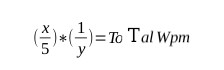

Copyright (c) 2022 Anass Zakar, Zakar Group
this software is free and anyone can edit it or help to make it better, anyone can join the zakar group, for more info check https://archuser555.github.io
Typing Test
Typing Test Is A Project That Calculate Your Writing Speed, And The Bad Part IS This software contain math... Like When we want calculate your wpm, we do this  x = words that user write it, y=time that user waste to write it,but ok this is not what we need to talk about in about, this project was made by Anass Zakar Aka Archuser555, A CEO in The Zakar Group,Anyone Can Help if see something need to change just go to github and Click the file you want to change click edit And THANK YOU!,Also Anyone Can Join The Zakar Group,Check here for more info https://archuser555.github.io,The Idea Of This Project Is Really Why I Made It, Because There Is no Other Website That Mix Fun And TypingTest In The Same Time, This Website Do!
--- Return